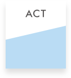

ACT:
The ACT Reading Test is a 40-question, 35-minute test based on multiple-choice questions derived from 4 passages that vary in genre from social studies to natural sciences, from prose fiction to humanities. Specifically, students will be tested upon a combination of referring and reasoning skills to:
- determine main ideas
- locate and interpret significant details
- understand sequences of events
- make comparisons
- comprehend cause-effect relationships
- determine the meaning of context-dependent words, phrases, and statements
- draw generalizations
- analyze the author’s or narrator’s voice and method
My Approach
I train students to make the best of reading strategies – underlining, summarizing, synthesizing, critiquing – to illuminate a mental framework for accelerating reading comprehension. These reading strategies and skills will be instilled and reinforced to help students understand the passages in their details and entirety, and most of all, to enhance speed and accuracy.